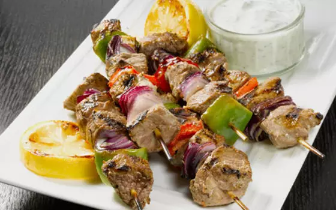

Lamb Kebab

Lamb Kebab Recipe
Great summery flavours. Delicious cooked either on the barbecue or under the grill.
Ingredients - Lamb kebab (serves 4)
- 750g lamb, leg or shoulder, well trimmed and cubed
- Olive oil
- 1 red and 1 green pepper, cut into chunks
- 1 red onion, cut into wedges
- Salt and freshly ground pepper
- 250ml Greek-style natural yoghurt
- 2 garlic cloves, crushed
- 1 tsp, ground coriander
- 1 tsp, ground cumin
- Juice of 1 lemon
Steps
- Combine the marinade ingredients in a large non-metallic dish. Add the diced lamb and stir to coat well,
then cover and place in the fridge for about 2 hours if possible.
- Meanwhile, soak 8 wooden skewers in water. This will prevent them scorching. If you are short of time use
metal skewers.
- Preheat your barbecue or grill to high and brush lightly with oil.
- Thread the lamb cubes, peppers and red onion onto the skewers, season and cook for 3-4 minutes on each side
until lightly charred and cooked to your taste.
- To make the Mint and Garlic Yoghurt Dressing, stir together all the ingredients and season to taste.
- Drizzle a little dressing over each lamb skewer and serve the rest on the side.
Back to Homepage